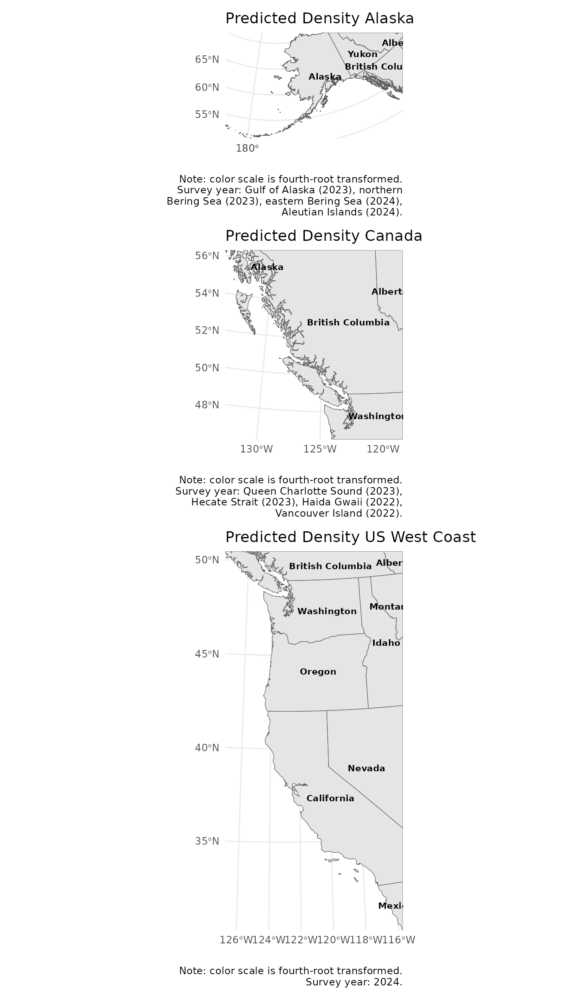
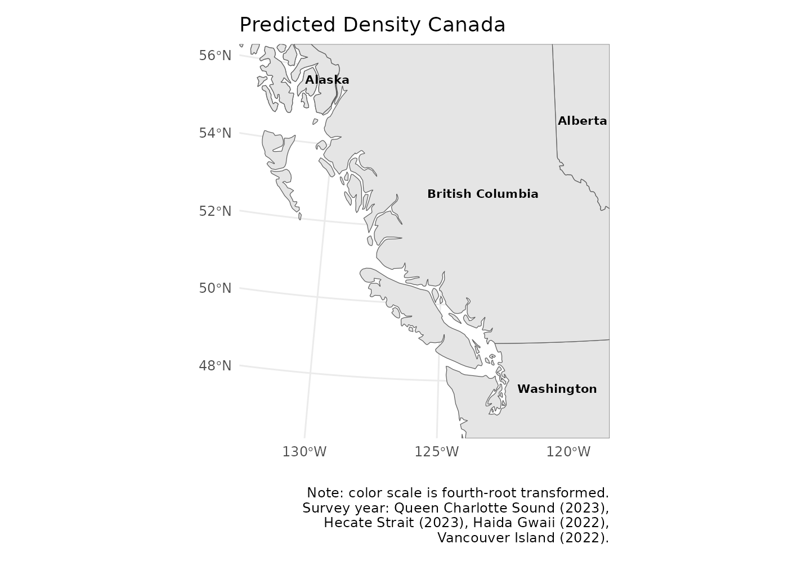

Mapping density
a3_fishmap.RmdDensity prediction data is stored in the fishyplots package. There
are three data frames for each region, which we can combine with
bind_rows from dplyr.
data(predictions_afsc)
data(predictions_pbs)
data(predictions_nwfsc)
data <- bind_rows(predictions_afsc, predictions_pbs, predictions_nwfsc)The function takes in these predictions, specified region(s), and 1 species. For instance, we can take a look at arrowtooth flounder densities in all regions. Note that if you select all regions but a species does not occur in all of them, empty base maps will still show up.
fishmap(data, c("AK BSAI", "AK GULF", "PBS", "NWFSC"), "arrowtooth flounder")
#> The rnaturalearthhires package needs to be installed.
#> Installing the rnaturalearthhires package.
#> Using github PAT from envvar GITHUB_PAT. Use `gitcreds::gitcreds_set()` and unset GITHUB_PAT in .Renviron (or elsewhere) if you want to use the more secure git credential store instead.
#>
#> Downloading GitHub repo ropensci/rnaturalearthhires@HEAD
#> ── R CMD build ─────────────────────────────────────────────────────────────────
#> * checking for file ‘/tmp/RtmpolglZO/remotes24cb59c9dcd4/ropensci-rnaturalearthhires-e4736f6/DESCRIPTION’ ... OK
#> * preparing ‘rnaturalearthhires’:
#> * checking DESCRIPTION meta-information ... OK
#> * checking for LF line-endings in source and make files and shell scripts
#> * checking for empty or unneeded directories
#> * building ‘rnaturalearthhires_1.0.0.9000.tar.gz’
#> Installing package into '/home/runner/work/_temp/Library'
#> (as 'lib' is unspecified)
Alternatively, you may just want to look at one region.
fishmap(data, "PBS", "dover sole")